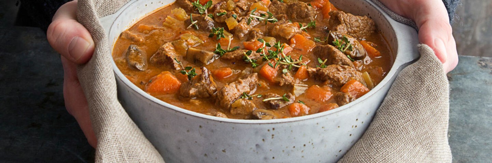

Uncle's Beef Stew
A stew, in the cold winter months is such a nourishing family meal.
The beauty behind it is that you can pop it on top of the cooker or
in the oven and just forget about it for an hour or two and it will happily cook away.
Igredients:
- 750 ml Beef Stock
- 2 - Carrots diced
- 50 g Mushrooms sliced
- 1 medium Onion diced
- 30 g Plain Flour
- 600 g SuperValu Fresh Irish Stewing Beef
- 1 tsp SuperValu Tomato Purée
- Herb Dumplings
- 0.5 medium Onion very finely diced
- 1 pinch Salt
- 200 g Self-Raising Flour
- 60 ml SuperValu Buttermilk
- 1 dstspn SuperValu Fresh Parsley chopped
Method:
- In a large saucepan heat a little oil. Add the stewing beef and fry quickly until coloured or sealed all over. Add the vegetables with the sealed beef and mix them well around and cook for 3-4 minutes until all the vegetables are coloured and glazed as well as the beef.
- Next, add the tomato puree and sprinkle the 30g flour. Stir to coat and colour the flour.
- Pour in the stock and allow to come to the boil and then reduce the heat to a gentle simmer and cook for 2 hours, covered until the meat and vegetables are tender and the sauce is a nice consistency.
- Meanwhile, make the dumpling. Mix the flour, salt, finely diced onion and fresh parsley together. Mix well.
- Gently stir in the buttermilk, do not add all the buttermilk at once because it may not take all of the liquid. Knead the dough very gently, just until it comes together and then cut out the dumplings using a pastry cutter. They should be no thicker that ¾ inch. leave them to set in the fridge until required.
- About ½ hour before the stew is ready, drop in the dumplings. Leave them to cook in the stew for about 25-30 minutes.
Home